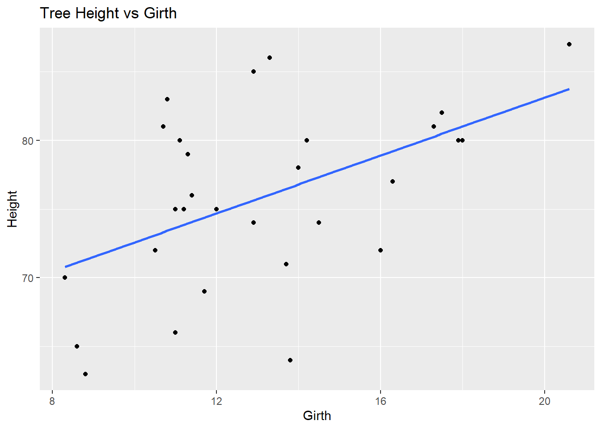
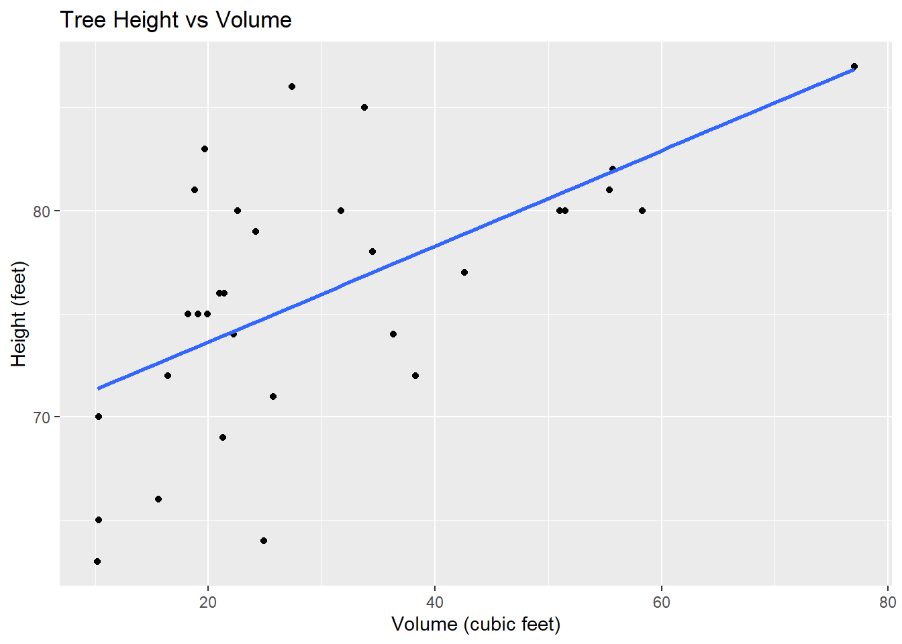
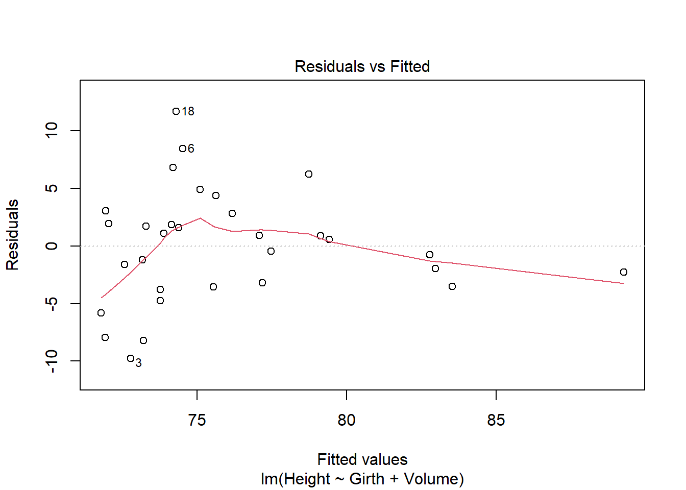
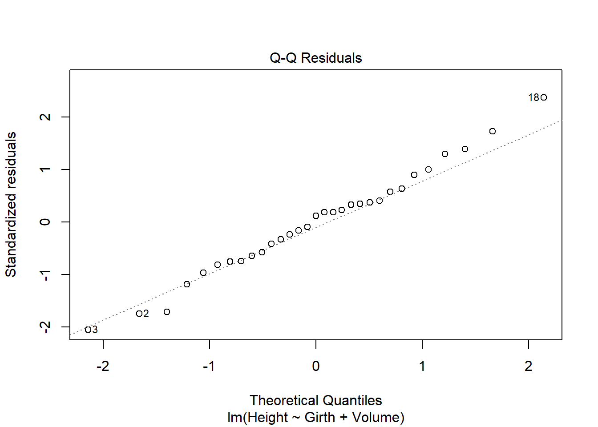
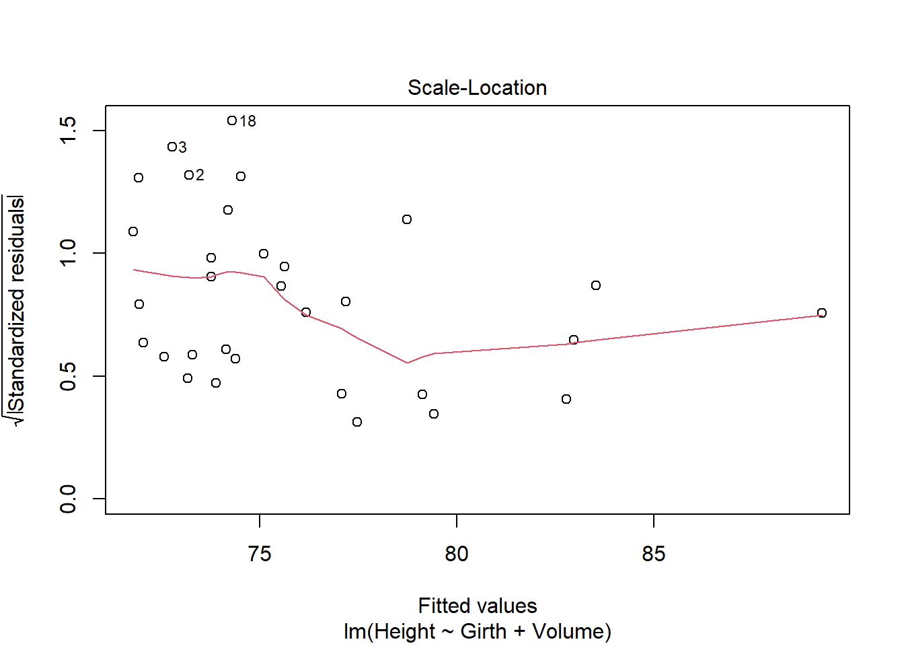
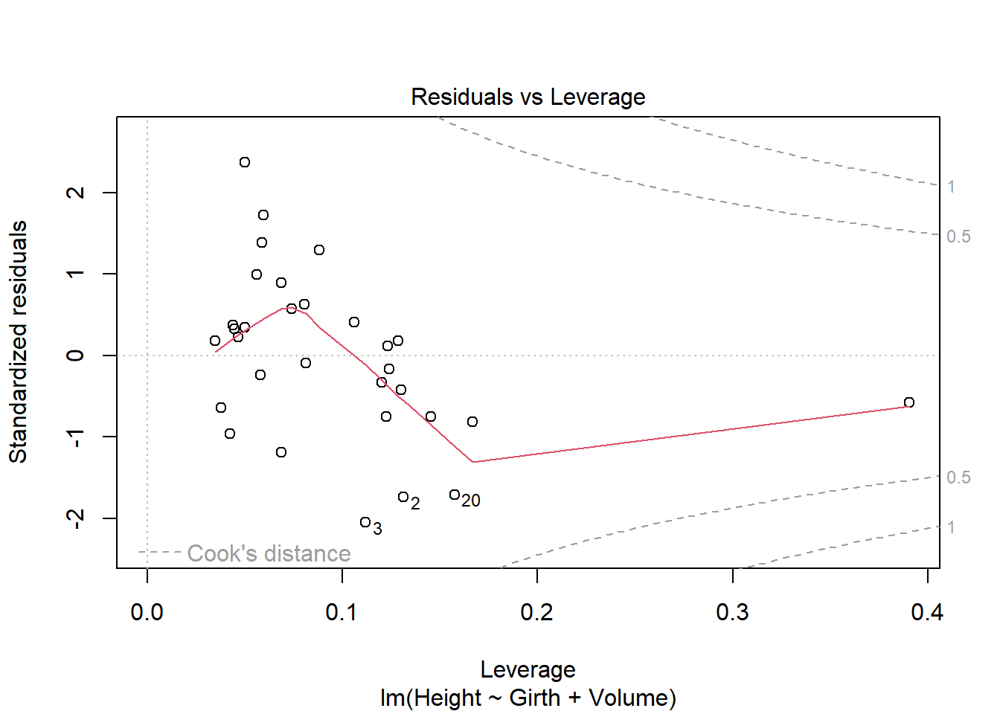
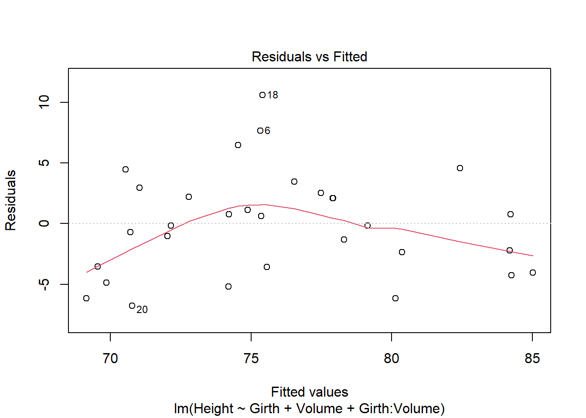
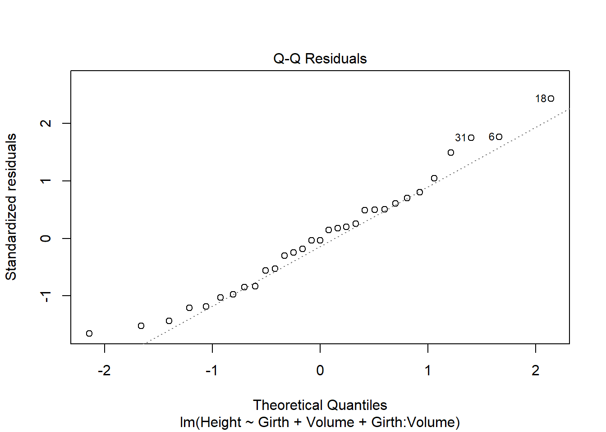
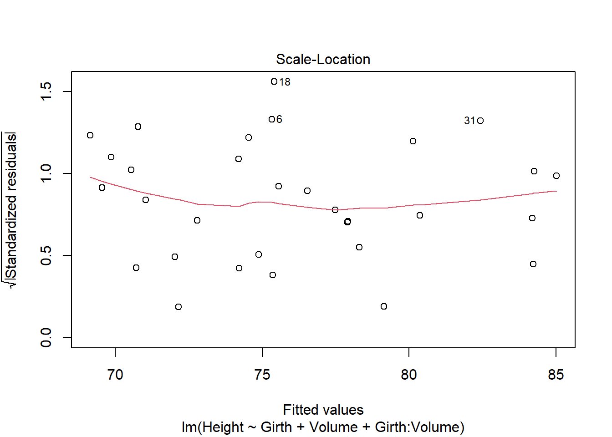
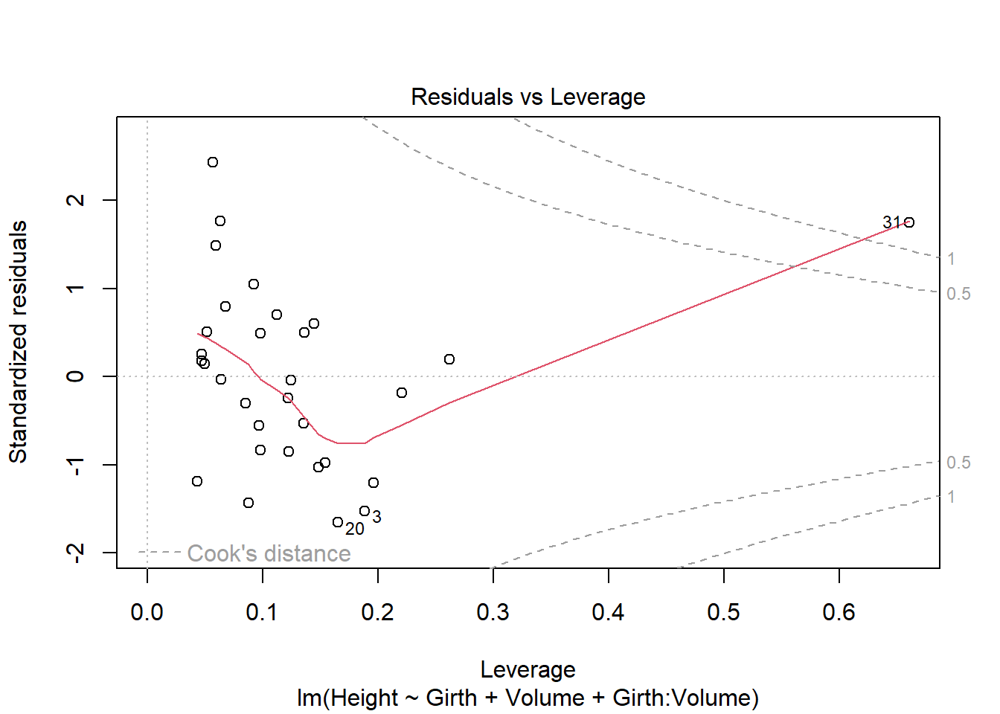

If we take the difference between \(\hat{Y}_{C}\) and \(\hat{Y}_{HS}\) then we end up with the equation \(\hat{Y}_{C}\) - \(\hat{Y}_{HS}\) = 35 - 10 * GPA. (Provided IQ and GPA are fixed values)
i) is incorrect because, if GPA is fixed to be below 3.5, the above equation is positive, meaning college students will earn more than high school students on average.
ii) is incorrect because, if GPA is fixed to be above 3.5, high school will earn more on average.
iii) is correct because, if GPA is fixed to be above 3.5, high school students will earn more on average.
iv) is incorrect, because there is an upper bound, not a lower bound, on GPA (3.5), that causes college students to earn more than high school students on average.
b)
For a college graduate with an IQ of 110, and GPA of 4.0, the prediction is as follows:
Therefore, the predicted salary of a college graduate with these qualities is $137,100
c)
This is false, because, even if the coefficient is small, if the coefficient’s SE is small, it can still be statistically significant. If we take into account a high GPA and a high IQ, even a coefficient of 0.01 can produce a value of over 5, meaning there is still relevant impact on the prediction.
Problem 4)
a)
Since the cubic model effectively contains the linear model, with 2 extra parameters, we expect the cubic model’s RSS to be lower than the linear model’s RSS, because the cubic model is more flexible, so it is expected that it fits the training data more accurately than the linear model. Perhaps this would be due to the cubic model fitting more noise than the linear model, but the result would still be a lower RSS than the linear model. It is possible for the RSS of both to be the same, if the 2nd and 3rd coefficients in the cubic model turn out to be completely irrelevant in the training data, but this is quite unlikely.
b)
Considering that the true relationship between X and Y is linear, we expect the linear model to have a lower RSS on the test data than the cubic model. Since the cubic model is more flexible, it would have fit more accurately to the points on the testing data, including possibilities of noise and overfitting. But if the true relationship is linear, then the linear model will have low bias and low variance on the test data, while the cubic model will have low bias but higher variance, therefore we expect it to have a higher RSS.
c)
We expect the training RSS to be lower for the cubic model, because, if the true relationship is non-linear, the cubic model will fit more accurately to the training data, capturing the non-linearity more than the linear model.
d)
In this case, we do not have enough information to tell which model will have a lower RSS on the test data. The linear model would have lower variance, but higher bias, while the cubic model would have higher variance, but lower bias. Since this scenario depends on the bias-variance tradeoff, and we do not know exactly how non-linear the true relationship is, we can’t determine which model will have a lower RSS.
Section 6.6
Problem 1:
a)
Since the best subset selection method examines all possible p Choose k models with k predictors, while forward and backward selection methods examine only a subset of the models that best subset selection does, we can determine that best subset selection has the smallest training RSS.
b)
Even though best subset will have the best training RSS, that does not mean it will have the best test RSS. Best subset may overfit, and stepwise methods may generalize more accurately. The bias-variance tradeoff comes into play, and without knowing the true model, we can’t determine which method will have the best test RSS.
c)
i)
True - Forward stepwise starts with 0 predictors, then adds the best predictor, then the best second predictor and so on. Therefore, the k+1 variable model is obtained by adding one predictor from the k variable model, and thus the k variable model is a subset of the k+1 variable model.
ii)
True - backward stepwise starts with p predictors, then removes one, and repeats the process. Therefore, the k model is obtained by removing one predictor from the k+1 model, and thus the k variable model is a subset of the k+1 variable model.
iii)
False - forward stepwise and backward stepwise are different methods of searching through the predictors. Disregarding the size of the models at k or k+1 for either method, the methods may simply contain different predictors due to their differing algorithms, therefore, there’s no reason to believe one could be a subset of another.
iv)
False - forward stepwise and backward stepwise are different methods of searching through the predictors. Disregarding the size of the models at k or k+1 for either method, the methods may simply contain different predictors due to their differing algorithms, therefore, there’s no reason to believe one could be a subset of another.
v)
False - during each iteration, best subset picks the best combo of k predictors. For the k+1’s iteration, the best possible combo of k+1 predictors may not necessarily contain all the predictors that were the best for the k-th iteration.
Problem 2:
a)
i)
Incorrect, Lasso is less flexible than least squares. due to the penalty it adds to the RSS.
ii)
Incorrect, Lasso is less flexible than least squares. due to the penalty it adds to the RSS.
iii)
Correct, Lasso is less flexible, and due to the bias-variance tradeoff, when it has a smaller increase in bias relative to its decrease in variance, the prediction accurary will improve.
iv)
Incorrect, Lasso is less flexible, meaning its variance decreases, while its bias increases. The statement supposes an increase in variance compared to least squares, which is opposite from what occurs between the 2.
Problem 3:
a)
iv) is correct - as s increases, constraints on coefficients become more relaxed, allowing for larger coefficient values, which leads to more flexibility in the model, which decreases the training RSS over time.
b)
ii) is correct, due the bias-variance tradeoff. At s = 0, we have exceptionally high bias, with very low variance, leading to a high RSS. As s increases from there, our bias decrease, while variance increases. If bias decreases more than variance increases, test RSS decreases. At some value of s, the bias-variance tradeoff reaches an optimal point (the bottom of the U curve). From there, bias will decrease, but variance will increase rapidly, leading to a higher test RSS.
c)
iii) is correct. As s increases, the relaxation on coefficients will increase, leading to more and more flexible models. As the flexibility of models increases, so does the variance.
d)
iv) is correct. As s increases, the relaxation on coefficients will increase, leading to more and more flexible models. As the flexibility of models increases, the bias decreases, since models will fit the training data more and more accurately.
e)
v) is correct. Irreducible error represents the variance of the error term, in other words, it represents noise that cannot be reduced by any model, therefore it will not change as our model changes by increasing s.
Problem 4
a)
iii) is correct. As lambda increases, the constraints on our coefficients increase, making the model more and more inflexible, which increases the training RSS as lambda gets larger.
b)
ii) is correct. As lambda increases, the bias increases, while variance decreases from the bias-variance highest point at lambda = 0. At some point, the bias-variance tradeoff will reach an optimal point, then bias will continue to increase while variance decreases further, increasing the test RSS.
c)
iv) is correct. At lambda = 0, the model is at its most flexible point, then steadily becomes more and more inflexible as lamdda increases. As inflexibility increases, variance decreases.
d)
iii) is correct. Since the model becomes more inflexible as lambda increases, bias will increase with it as well.
e)
v) is correct. Irreducible error represents the variance of the error term, in other words, it represents noise that cannot be reduced by any model, therefore it will not change as our model changes by increasing lambda.
Implementation Problem 1:
a)
library(tidyverse)bike_share <-read_csv("https://www4.stat.ncsu.edu/online/datasets/SeoulBikeData.csv",local =locale(encoding ="latin1"))bike_share <- bike_share |>rename("date"="Date","rented_bike_count"=`Rented Bike Count`,"hour"="Hour","temperature"=`Temperature(°C)`,"humidity"=`Humidity(%)`,"wind_speed"=`Wind speed (m/s)`,"visibility"=`Visibility (10m)`,"dew_point_temperature"=`Dew point temperature(°C)`,"solar_radiation"=`Solar Radiation (MJ/m2)`,"rainfall"=`Rainfall(mm)`,"snowfall"=`Snowfall (cm)`,"seasons"="Seasons","holiday"="Holiday","functioning_day"="Functioning Day" ) |>mutate(date =dmy(date), #convert the date variable from characterseasons =factor(seasons),holiday =factor(holiday),functioning_day =factor(functioning_day),log_rented_bike_count =log(rented_bike_count)) |>filter(functioning_day =="Yes")library(caret)set.seed(123)train_index <-createDataPartition(bike_share$log_rented_bike_count, p =0.7, # 70% traininglist =FALSE)# Split the databike_train <- bike_share[train_index, ]bike_test <- bike_share[-train_index, ]# Check the sizesnrow(bike_train)
[1] 5927
nrow(bike_test)
[1] 2538
b)
#Create tuning gridtune_grid <-expand.grid(alpha =seq(0, 1, by =0.1), lambda =seq(0.001, 0.1, by =0.005) )head(tune_grid)
# Make predictions on test settest_predictions <-predict(elastic_fit, newdata = bike_test)# Calculate RMSEtest_rmse <-RMSE(pred = test_predictions, obs = bike_test$log_rented_bike_count)#test RMSE = 0.5352test_rmse
[1] 0.5352093
Problem 2:
a)
library(tidyverse)data(trees)#First plot: height vs girthggplot(trees, aes(x = Girth, y = Height)) +geom_point() +geom_smooth(method ="lm", se =FALSE) +labs(title ="Tree Height vs Girth",x ="Girth",y ="Height")

#Second plot: height vs volumeggplot(trees, aes(x = Volume, y = Height)) +geom_point() +geom_smooth(method ="lm", se =FALSE) +labs(title ="Tree Height vs Volume",x ="Volume (cubic feet)",y ="Height (feet)")

b)
#Fit main effect modelmodel1 <-lm(Height ~ Girth + Volume, data = trees)summary(model1)
Call:
lm(formula = Height ~ Girth + Volume, data = trees)
Residuals:
Min 1Q Median 3Q Max
-9.7855 -3.3649 0.5683 2.3747 11.6910
Coefficients:
Estimate Std. Error t value Pr(>|t|)
(Intercept) 83.2958 9.0866 9.167 6.33e-10 ***
Girth -1.8615 1.1567 -1.609 0.1188
Volume 0.5756 0.2208 2.607 0.0145 *
---
Signif. codes: 0 '***' 0.001 '**' 0.01 '*' 0.05 '.' 0.1 ' ' 1
Residual standard error: 5.056 on 28 degrees of freedom
Multiple R-squared: 0.4123, Adjusted R-squared: 0.3703
F-statistic: 9.82 on 2 and 28 DF, p-value: 0.0005868
plot(model1)




Girth p-value = 0.1188, since this is higher than the standard cutoff of 0.05, we fail to reject the null hypothesis, and therefore Girth is not statistically significant. Volume p-value = 0.0145, since this is lower than the standard cutoff of 0.05, we reject the null hypothesis, and therefore Volume is statistically significant.
On the Residuals vs. Fitted plot, there seems to be no clear patterns, leading to the conclusion that the model is adequate.
On the QQ plot, the points adhere to the diagonal line quite well, leading to the conclusion that normality of residuals holds.
On the Scale-Location plot, the line is relatively flat, and points are mostly scattered randomly, leading to the mostly-confident conclusion that homoscedasticity holds.
On the Residuals vs Leverage plot, we see no highly influential points. Some observations are far from the line, but with low leverage, while the points with more leverage are within a safe distance from the line.
#Model fit with main effects and interaction termmodel2 <-lm(Height ~ Girth + Volume + Girth:Volume, data = trees)summary(model2)
Call:
lm(formula = Height ~ Girth + Volume + Girth:Volume, data = trees)
Residuals:
Min 1Q Median 3Q Max
-6.7781 -3.5574 -0.1512 2.3631 10.5879
Coefficients:
Estimate Std. Error t value Pr(>|t|)
(Intercept) 75.40148 8.49147 8.880 1.7e-09 ***
Girth -2.29632 1.03601 -2.217 0.035270 *
Volume 1.86095 0.47932 3.882 0.000604 ***
Girth:Volume -0.05608 0.01909 -2.938 0.006689 **
---
Signif. codes: 0 '***' 0.001 '**' 0.01 '*' 0.05 '.' 0.1 ' ' 1
Residual standard error: 4.482 on 27 degrees of freedom
Multiple R-squared: 0.5546, Adjusted R-squared: 0.5051
F-statistic: 11.21 on 3 and 27 DF, p-value: 5.898e-05
plot(model2)




p-value of Girth is 0.035, less than the standard cutoff of 0.05, so it is statistically significant, opposed to the finding in the previous model that only dealt with main effects. p-value of Volume is 0.0006, so it is very significant, and the p-value of the interaction term is 0.0067, so it is quite significant as well.
Residuals vs Fitted plot shows no clear pattern, indicating that the model is adequate.
QQ plot shows strong adherence to the line aside from a few values that are slightly off, indicating that normality of errors holds.
Scale-Location plot shows a mostly straight line, with no clear pattern, points scattered randomly, indicating that homoscedasticity holds.
Residuals vs Leverage plot shows most points having low leverage, with a couple points having slightly more leverage and distance from the line, indicating a lack of strongly influential points.
In the first model, Girth was not statistically significant, with a high p-value, but in this model, it became significant when the interaction term was included. This suggests that Girth does have an important effect, but the effect depends on Volume.
#Simple linear model with just Volumemodel_simple <-lm(Height ~ Volume, data = trees)#Cubic polynomial modelmodel_poly <-lm(Height ~ Volume +I(Volume^2) +I(Volume^3), data = trees)summary(model_simple)
Call:
lm(formula = Height ~ Volume, data = trees)
Residuals:
Min 1Q Median 3Q Max
-10.7777 -2.9722 -0.1515 2.0804 10.6426
Coefficients:
Estimate Std. Error t value Pr(>|t|)
(Intercept) 69.00336 1.97443 34.949 < 2e-16 ***
Volume 0.23190 0.05768 4.021 0.000378 ***
---
Signif. codes: 0 '***' 0.001 '**' 0.01 '*' 0.05 '.' 0.1 ' ' 1
Residual standard error: 5.193 on 29 degrees of freedom
Multiple R-squared: 0.3579, Adjusted R-squared: 0.3358
F-statistic: 16.16 on 1 and 29 DF, p-value: 0.0003784
summary(model_poly)
Call:
lm(formula = Height ~ Volume + I(Volume^2) + I(Volume^3), data = trees)
Residuals:
Min 1Q Median 3Q Max
-12.6151 -2.0479 0.7195 2.0570 8.7378
Coefficients:
Estimate Std. Error t value Pr(>|t|)
(Intercept) 53.0227266 7.3489848 7.215 9.26e-08 ***
Volume 1.7069656 0.6649193 2.567 0.0161 *
I(Volume^2) -0.0372939 0.0175046 -2.131 0.0424 *
I(Volume^3) 0.0002728 0.0001378 1.979 0.0581 .
---
Signif. codes: 0 '***' 0.001 '**' 0.01 '*' 0.05 '.' 0.1 ' ' 1
Residual standard error: 4.939 on 27 degrees of freedom
Multiple R-squared: 0.4592, Adjusted R-squared: 0.3991
F-statistic: 7.643 on 3 and 27 DF, p-value: 0.000746
anova(model_simple, model_poly)
Analysis of Variance Table
Model 1: Height ~ Volume
Model 2: Height ~ Volume + I(Volume^2) + I(Volume^3)
Res.Df RSS Df Sum of Sq F Pr(>F)
1 29 782.07
2 27 658.65 2 123.42 2.5297 0.09841 .
---
Signif. codes: 0 '***' 0.001 '**' 0.01 '*' 0.05 '.' 0.1 ' ' 1
The test yielded an p-value of 0.098, which is greater than 0.05, leading to the conclusion that the squared/cubic terms are not jointly statistically significant. The simpler model with just Volume is more adequate for predicting Height.
#metrics df shows that 7 predictors is the optimal model size (lowest AIC&BIC, with highest adjR2)#list of predictors from best subset modelcoef(best_subset, 7) |>round(3)
(Intercept) CompPrice Income Advertising Price
5.427 0.093 0.015 0.107 -0.095
ShelveLocGood ShelveLocMedium Age
4.995 2.171 -0.048
forward <-regsubsets(Sales ~ ., data = carseats_train,nvmax =10,method ="forward") forward_summary <-summary(forward)forward_metrics <-data.frame(aic = forward_summary$cp,bic = forward_summary$bic,adjR2 = forward_summary$adjr2)#Forward stepwise also gives the same conclusion, 7 predictorsforward_metrics |>round(3)